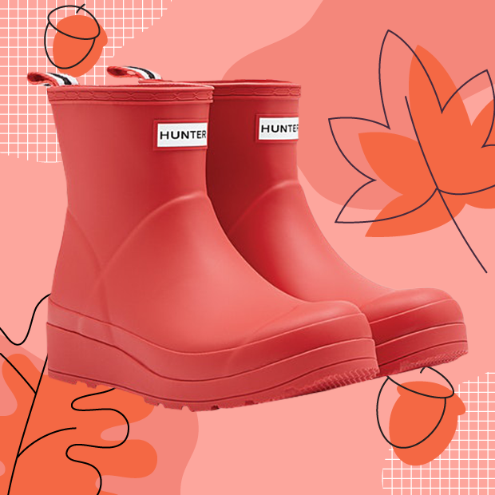
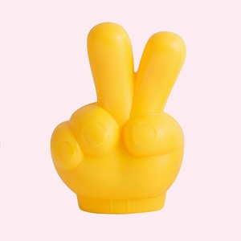
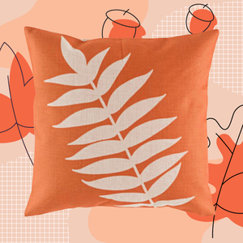
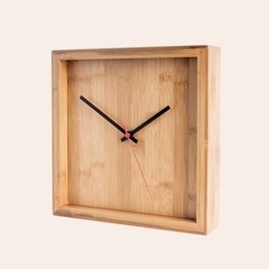
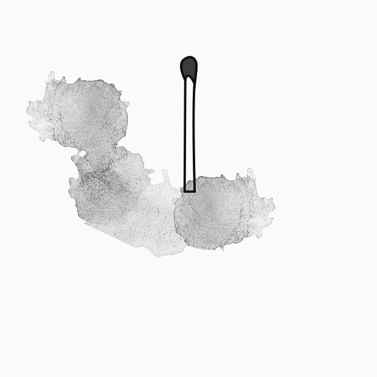

10 сентября
Чем заняться осенью: Все планы
Новости Показать весь архив


11 сентября
Чеклист: 7 признаков того, что вы решительнее, чем думаете


12 сентября
Четыре дня в неделю: Не пора ли нам работать меньше

3 сентября
Что такое выгорание и как с ним бороться